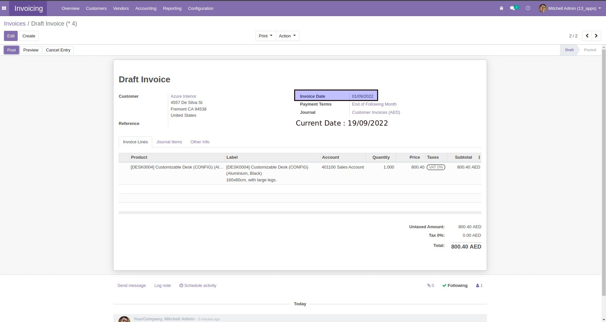
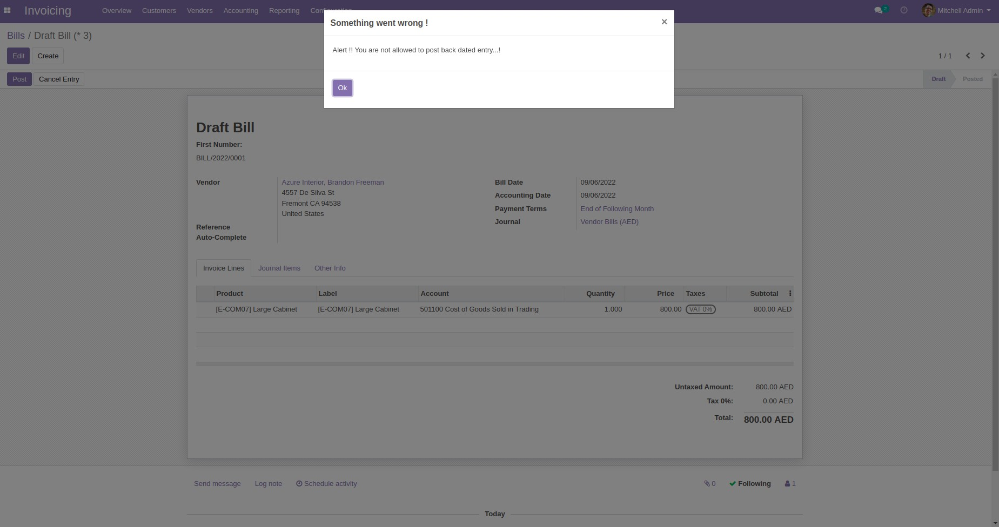
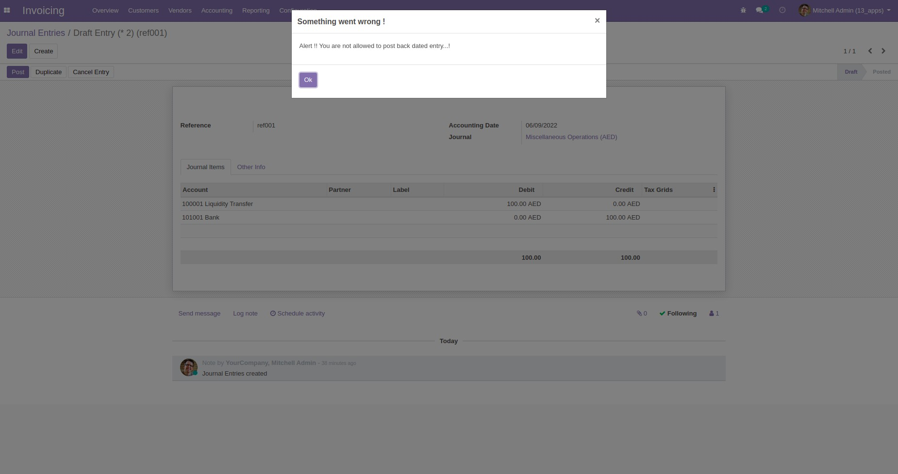

Using this module, Admin can configure Back dated entry days on the user profile,like (10 days)
In that user account, If Accounting data lesser than the allowed backlog days mean a validation popup will be appeared.!
User Level Back Dates Configuration
Restriction on Customer Invoice
Restriction on Vendor Bills
Restriction on Journal Entries
